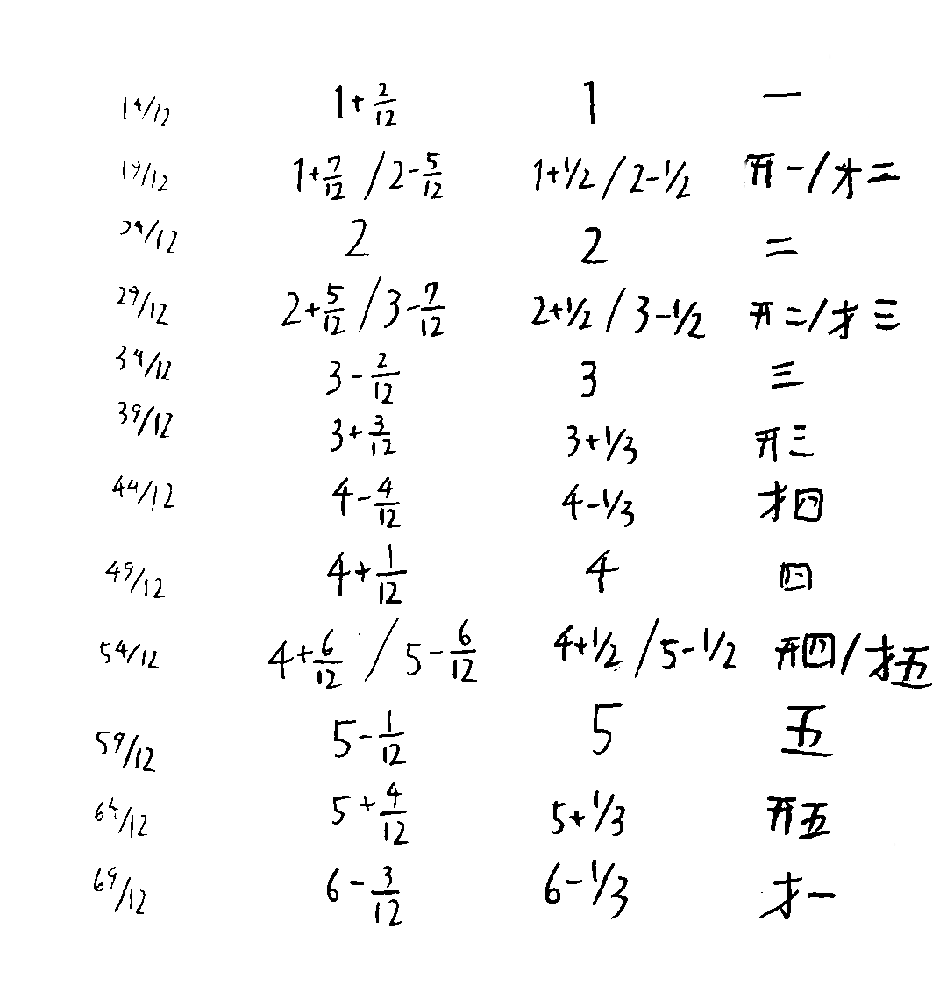
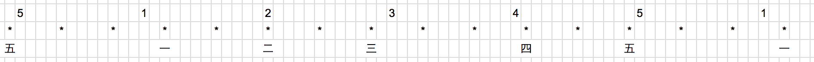
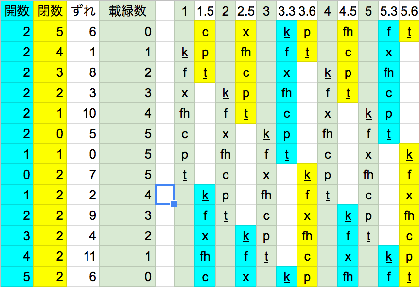
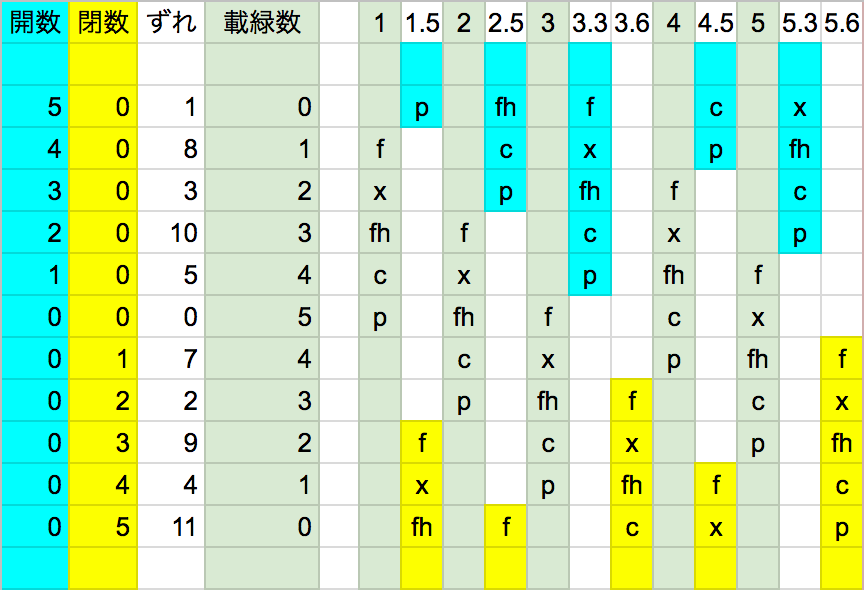

以下のは雑記・考察ログです。すでに絶滅した過去の仕様などが数多く含まれていることがあります。
2017年7月26日に起きた古理字存続論争によって、リパーシェをtkxs順に配置することは非真理設定となった。しかるに、理語辞書には「ドレミファソラシ」がte ke xa sa nje vi fyとして登録されている。
リパーシェをtkxs順に配置することが非真理設定である以上、te ke xa saなどという呼び方も当然非真理設定である。ということで、これらの単語を廃し、これを機に音楽史をちゃんと考えていこう、という流れになったのが経緯である。
fafs falira sashimi曰く、「ファイクレオネにおける音楽発達の原初はラネーメ音楽とリパラオネ音楽に分かれる。ラネーメ音楽の方が早いのではと考えラネーメ語→ヴェフィス語から借入と考えるのが妥当」ということで、リパライン語での呼び名はヴェフィス語からの借入となった。
ラネーメでの呼び方は次のようになった。
| 現世 | ド | ド♯ | レ | レ♯ | ミ | ファ | ファ♯ | ソ | ソ♯ | ラ | ラ♯ | シ |
| レ♭ | ミ♭ | ソ♭ | ラ♭ | シ♭ | ||||||||
| 羅 | 一 | 開一 | 二 | 開二 | 三 | 開三 | 四 | 開四 | 五 | 開五 | ||
| 閉二 | 閉三 | 閉四 | 閉五 | 閉一 | ||||||||
| パイグ読み | et2 | nam2 et2 | ik2 | nam2 ik2 | om2 | nam2 om2 | ap1 | nam2 ap1 | un1 | nam2 un1 | ||
| in2 ik2 | in2 om2 | in2 ap1 | in2 un1 | in1 un1 | ||||||||
| 再構音 | las | rik | lumi | ngam | slqna |
なお、「開／閉」を使うのは「声筒」（ラネーメの笛）が原因だそうだ。
五までしかないのは、ラネーメ人が五をキリの良い数としたかららしい。実際、パイグ語のnik2「七」とかはun1「五」とik2「二」の融合である。
さて、ここで「ファイクレオネと現世の間の単位の対応」と比べてみると、「一」の音が243stu^(-1)〜244.3stu^(-1)、現世の単位でいうなら300.27Hz〜301.89Hzとなる。
さて、この「一」「二」「三」「四」「五」の間って不均等に空いているので、せっかくなら均等になるようなやつも考えてみた。まあ一種のお遊びにすぎないが。
 「平均表記」とでも呼ぼうかなぁ、平均律と無限に紛らわしいけど。
ちなみに、これは整数値での最小二乗法による。小数値含めた場合ってどうなるんだろう。
さて、歴史的経緯を逆順に辿って、まず12平均律の元で移調をしよう。異名同音について考えて、そこから純正律とかでの異名異音について考えよう。
長音階7音:
長音階5音（ヨナ抜き；元来の一二三四五の音階）:
調名としては、ここからとって「一開一閉」「二開三閉」とかにすればいいんじゃないかなという気がしている。
さて、5音で移調するか7音で移調するかで「開」と取るか「閉」と取るか変わってくるなこれ。
まあ、7音移調だと「開三⇄閉四」「開五⇄閉一」間の移動が発生することになるが、それでは理論体系上美しくないからなぁ。やはり5音ベースで作られた音階は5音で移調した方が『体系としては』綺麗だ。とはいえ、現実問題としては7音がメインだろうけど。
なお、以上のものは、Google Spreadsheetにまとめてある。
三分損益法としても知られているやつである。周波数を1.5倍していくことで「一」→「四」→「二」→「五」→「三」を作っていく方式である。
| 一 | 二 | 三 | 四 | 五 |
| 1 | 9/8 | 81/64 | 3/2 | 27/16 |
さて、このうちどれが調和するかという表を書かなきゃなのだが、手動で書くのめんどいなぁ。自動化するか。
「分母が1,2,3,4,5,6,8,9、分子が1,2,3,4,5,6,8,9,10,12,16のどれかである数」との比が0.9905と1.0095の間にあれば調和、と設定すれば、平均律は半音と√2以外は調和判定で、純正律の81/64や40/27や32/27は非調和。
順序
構成順
なるほど。
81/64を80/64 = 5/4にしたがるのはどの世界でも同じでしょ。
まず三だけずらした場合。
| 一 | 二 | 三 | 四 | 五 |
| 1 | 9/8 | 5/4 | 3/2 | 27/16 |
一三と三四が消えて三五が生まれる感じか。
三と五をずらした場合。
| 一 | 二 | 三 | 四 | 五 |
| 1 | 9/8 | 5/4 | 3/2 | 5/3 |
なるほどね。
さらに二をずらした場合。
| 一 | 二 | 三 | 四 | 五 |
| 1 | 10/9 | 5/4 | 3/2 | 5/3 |
ふむふむ。
現世のとの対応を調べてみると、三と五をずらすのが長音階用（FAC, CEG, GBDが4:5:6なので）のPtolemy's intense diatonic scale、二三五をずらすのが短音階用（DFA, ACE, EGBが1/6:1/5:1/4なので）らしい。ふむぅ。
とはいえ、この状況だとまだFとかBを扱えていないんよな。ということで一旦ピタゴラス音律に戻る。
とりあえず移調表を見よう。
ということで、過去のラネーメ人は以下のような発想で「開」「閉」の概念にたどり着いたのだろう。
例えば元の一を元の四の位置まで持っていったとすると、
| 旧一 | 旧二 | 旧三 | 旧四 | 旧五 | |
| 243/256 | 1 | 9/8 | 81/64 | 3/2 | 27/16 |
| 新三 | 新四 | 新五 | 新一 | 新二 |
となるので、新三は旧一から243/256だけ低い位置にある。このとき、旧においてここに対応する音を閉一と呼ぶ。
一般に、元の位置から243/256だけ低い位置にあるものは元の音の「閉」である。
逆に、元の四を元の一の位置まで持っていったとすると、
| 旧一 | 旧二 | 旧三 | 旧四 | 旧五 | |
| 1 | 9/8 | 81/64 | 4/3 | 3/2 | 27/16 |
| 新四 | 新五 | 新一 | 新二 | 新三 |
となり、新一は旧三から256/243だけ高い位置にある。このとき、旧においてここに対応する音を開三と呼ぶ。
一般に、元の位置から256/243だけ高い位置にあるものは元の音の「開」である。
当然ながら、「開」「閉」は対となる概念である。一を四とすれば音が一つ閉じ、四を一とすれば音が一つ開く。
これらを「六」とかとしなかったのは、「一二三四五」が固まったあとに派生したものだからだろう。
この方針で進めていくと、次のようになる。
| 開一 | 開四 | 開二 | 開五 | 開三 | 一 | 四 | 二 | 五 | 三 | 閉一 | 閉四 | 閉二 | 閉五 | 閉三 |
| 256/243 | 128/81 | 32/27 | 16/9 | 4/3 | 1 | 3/2 | 9/8 | 27/16 | 81/64 | 243/128 | 729/512 | 2187/2048 | 6561/4096 | 19683/16384 |
余談だが、いわゆる「ドレミファソラシド」は、この列の真ん中あたりの「開三〜閉一」をとったものとして考えることができる。ちなみにピタゴラスの時代は「ドレミファ♯ソラシド」が主流だったとか聞いたことがある。その場合は「一〜閉四」ですな。
しかし、そう考えると7音階において「一開一閉」「二開無閉」「無開二閉」の間にそこまでステータス差がないかもな。現世の場合はハ長調は調号のつかない唯一の調という特別さがあるが。
しかし、そうなると七音階の調の挙動とかにも差が出るかもな。ちょっと考えてみるか。
んー。
んーー。
先に純正律を考えよう。
ピタゴラス音律の
| 開一 | 開四 | 開二 | 開五 | 開三 | 一 | 四 | 二 | 五 | 三 | 閉一 | 閉四 | 閉二 | 閉五 | 閉三 |
| 256/243 | 128/81 | 32/27 | 16/9 | 4/3 | 1 | 3/2 | 9/8 | 27/16 | 81/64 | 243/128 | 729/512 | 2187/2048 | 6561/4096 | 19683/16384 |
の中に出てくる81/64を5/4で近似するのが純正律。Ptolemy's intense diatonic scaleは
| 開一 | 開四 | 開二 | 開五 | 開三 | 一 | 四 | 二 | 五 | 三 | 閉一 | 閉四 | 閉二 | 閉五 | 閉三 |
| - | - | - | - | 4/3 | 1 | 3/2 | 9/8 | 5/3 | 5/4 | 15/8 | - | - | - | - |
他にも、二を9/8でなく10/9にするやつもあるそうだ。その場合は
| 開一 | 開四 | 開二 | 開五 | 開三 | 一 | 四 | 二 | 五 | 三 | 閉一 | 閉四 | 閉二 | 閉五 | 閉三 |
| - | - | - | - | 4/3 | 1 | 3/2 | 10/9 | 5/3 | 5/4 | 15/8 | - | - | - | - |
開五・閉四を含めてちょっくら表にしてみるか。まず開五=16/9, 二=9/8, 閉四=45/32
3/2が五段階続くのを防ぐため開五=9/5にした場合
次に開五=16/9, 二=10/9, 閉四=45/32
3/2が五段階続くのを防ぐため閉四=25/18
むー。
もうちょい見やすい方法で考えをしてみるか。Wikipediaにあった表を参考に
| 三 100/81 | 閉一 25/27 | 閉四 25/18 | 閉二 25/24 | 閉五 25/16 | 閉三 75/64 | 層閉一 225/256 | ||
| 一 80/81 | 四 40/27 | 二 10/9 | 五 5/3 | 三 5/4 | 閉一 15/8 | 閉四 45/32 | 閉二 135/128 | |
| 開四 128/81 | 開二 32/27 | 開五 16/9 | 開三 4/3 | 一 1 | 四 3/2 | 二 9/8 | 五 27/16 | 三 81/64 |
| 層開五 256/135 | 層開三 64/45 | 開一 16/15 | 開四 8/5 | 開二 6/5 | 開五 9/5 | 開三 27/20 | 一 81/80 | |
| 層開一 256/225 | 層開四 128/75 | 層開二 32/25 | 層開五 48/25 | 層開三 36/25 | 開一 27/25 | 開四 81/50 |
（この表つくるのにひたすら時間がかかった。自動化すべきだったな）
この青い部分が一と調和する部分。結構時間かけて作ったのに25の行とかが見事に全部ハズレでアである。まあ純正律のコンマを排除するように閾値を設定しているのだから当然か。
| メジャーコード | マイナーコード | ディミニッシュ | |||||||||||||||||
|
|
|
層開とかいう謎用語は避けたいだろうし、調和を考えて真ん中15マスマイナス層開三に着目するのは当然だろうな。
| 二 10/9 | 五 5/3 | 三 5/4 | 閉一 15/8 | 閉四 45/32 |
| 開五 16/9 | 開三 4/3 | 一 1 | 四 3/2 | 二 9/8 |
| 開一 16/15 | 開四 8/5 | 開二 6/5 | 開五 9/5 |
ものすごーくWikipediaの表に似てきたが、まあそりゃ異世界でも数学は同じですからねぇ。
さて、あとはこの「二」「開五」においてどちらを採用するかという問題が残るわけだが、まあ両方左のを採用するのはメリットがないわけで、「左二；右開五」「右二；左開五」「右二；右開五」のどれかになるだろう。ということでダイスロール。
ダイスロール曰く「右二；左開五」と。なるほどなるほど。ということで、最終的な表は次のような感じ。
| 五 5/3 | 三 5/4 | 閉一 15/8 | 閉四 45/32 | |
| 開五 16/9 | 開三 4/3 | 一 1 | 四 3/2 | 二 9/8 |
| 開一 16/15 | 開四 8/5 | 開二 6/5 |
順番に並べるなら
| 一 1 | 開一 16/15 | 二 9/8 | 開二 6/5 | 三 5/4 | 開三 4/3 | 閉四 45/32 | 四 3/2 | 開四 8/5 | 五 5/3 | 開五 16/9 | 閉一 15/8 | 一 2 | |||||||||||||
| 16/15 | 135/128 | 16/15 | 25/24 | 16/15 | 135/128 | 16/15 | 16/15 | 25/24 | 16/15 | 135/128 | 16/15 | ||||||||||||||
| 9/8 | 10/9 | 6/5 | 10/9 | 6/5 | |||||||||||||||||||||
こう見ると、開がやっぱり優勢ですな。フラットの存在感も強い西欧音楽との良い対比が出ていて面白い。
あと、この名付け方で面白いのは「開」と「閉」の対が保存されていることですな。比は256/243≒1.053498から16/15≒1.066667に変わっているけど。
表を見ればコードを考えるのも簡単。メジャーが「一・三・四」「開一・開三・開四」「開三・五・一」「四・閉一・二」「開四・一・開二」、マイナーが「一・開二・四」「三・四・閉一」「開三・開四・一」「五・一・三」「開五・開一・開三」「閉一・二・閉四」、ディミニッシュは「五・一・開二」のみ。なるほど。
えーと、現世での一般的な呼び名と比べてみると、まずメジャーの「開四・一・開二」は「ラ♭ドミ♭」と書きたいから、「開四」はラ♭、「開二」はミ♭に当てたいな。となると「開一・開三・開四」は「レ♭ファラ♭」だから「開一」にはレ♭の方がふさわしい。「開五・開一・開三」を考えるに「開五」もシ♭。「閉一・二・閉四」を考えると「閉四」はファ♯。
要するに、 「開一」はレ♭、「開二」はミ♭、「開三」はファ、「開四」はラ♭、「開五」はシ♭、「閉一」はシ、「閉四」はファ♯、という風に転写するのが、現世の音楽理論とラネーメ音楽理論の橋渡しとしては正しい姿。
以上の変換規則で現世のに翻訳すると、以下のような感じ。
メジャー：「ドミソ」「レ♭ファラ♭」「ファラド」「ソシレ」「ラ♭ドミ♭」
マイナー：「ドミ♭ソ」「ミソシ」「ファラ♭ド」「ラドミ」「シ♭レ♭ファ」「シレファ♯」
ディミニッシュ：「ラドミ♭」
ということで、これを元に対応表を更新するとこのような感じ。カッコでくくられているのは、今回の純正律では登場しない音。表で同じ位置に出てくる名前が対応関係にある。
| 現世 | ド | レ♭ | レ | ミ♭ | ミ | ファ | ソ | ラ♭ | ラ | シ♭ | ||
| (ド♯) | (レ♯) | ファ♯ | (ソ♯) | シ | ||||||||
| 羅 | 一 | 開一 | 二 | 開二 | 三 | 開三 | 四 | 開四 | 五 | 開五 | ||
| (閉二) | (閉三) | 閉四 | (閉五) | 閉一 |
表の現世側からはシ♯ミ♯ラ♯ソ♭ド♭ファ♭の6つの名前が消えているが、現世には7*3種があるのに対しラネーメには5*3種のみがあるのだからこの差は必然である。不足している分は平均律を使えば解決できるし、そうでなくとも層開・層閉を用いれば良いのだから実用上・運用上の問題はない。